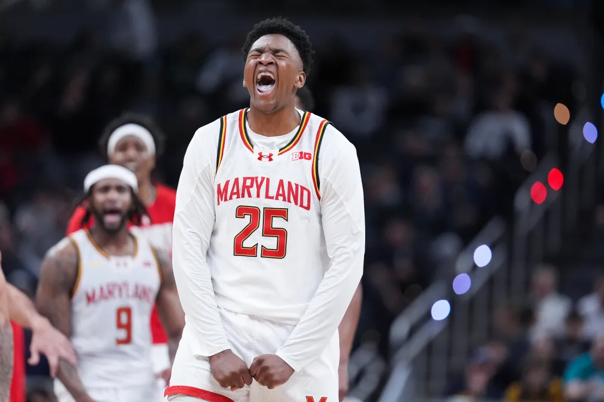
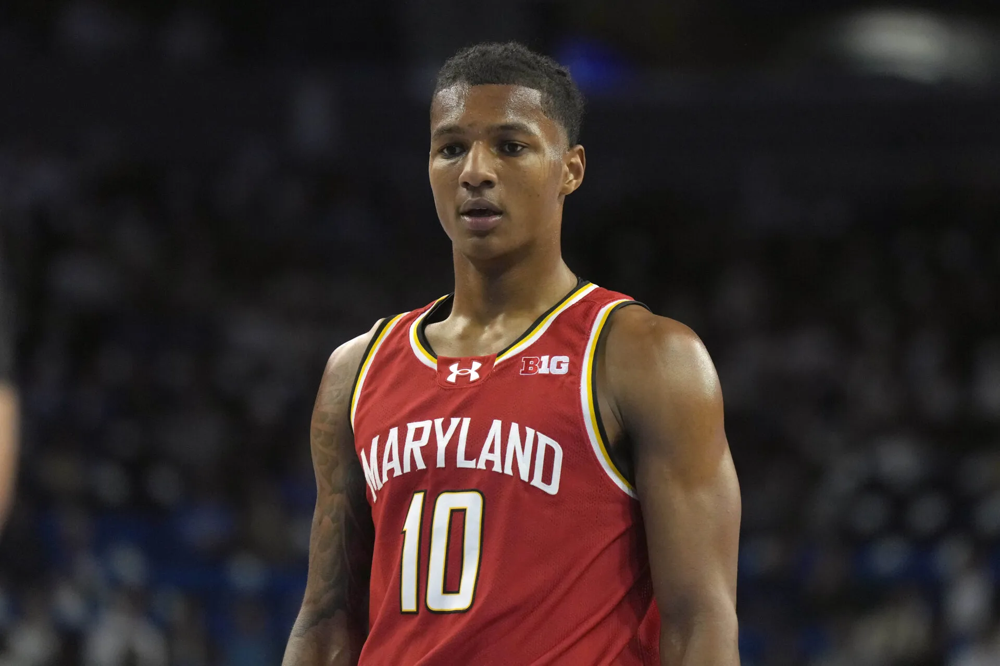

Derik Queen
Derik Queen was selected by the Atlanta Hawks with the 13th pick in the 2025 NBA Draft. However, Queen was included in a draft-day trade that sent him to the New Orleans Pelicans, where he currently plays today. Queen has had a standout rookie season, receiving buzz about winning the Rookie of the Year Award. As of March 10, Queen averages 11.9 points per game, 7.1 rebounds per game, and 3.9 assists per game.
JuJu Reese
JuJu Reese was not featured in the 2025 NBA Draft like Queen was. Instead, Reese went undrafted and signed a summer league contract with the Los Angeles Lakers. After departing from Los Angeles, Reese joined Toronto Raptors' G-League affiliate where he played well. Well enough that he earned an opportunity to play with the hometown Washington Wizards. On March 5, Reese recorded the most rebounds in a single game by a rookie this season, leaving his mark on the game in a short amount of time.